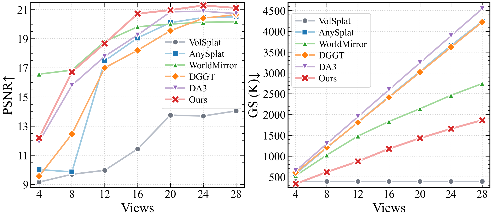
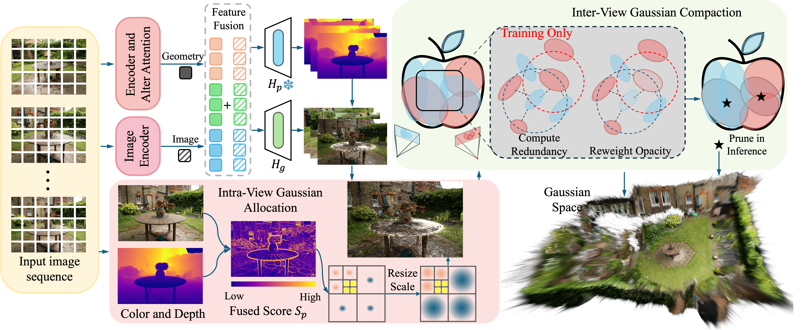
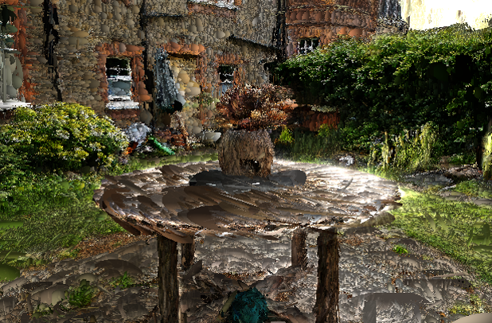
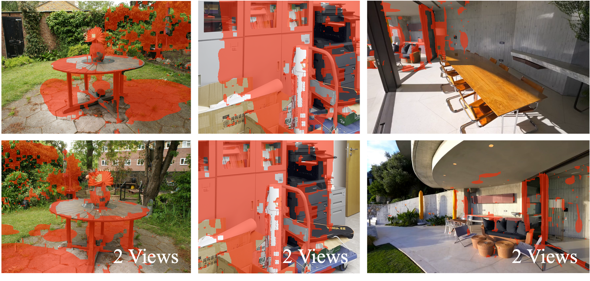
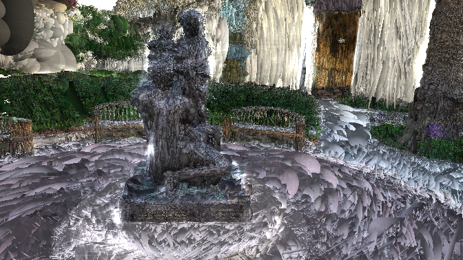

Intra-view Over-allocation
Dense pixel-wise prediction assigns unnecessary Gaussians to simple regions.
Compact feed-forward 3D Gaussian Splatting

Overview
Feed-forward 3D Gaussian Splatting enables efficient scene reconstruction by directly predicting Gaussian representations from sparse input images. However, existing approaches generate primitives according to observation density rather than intrinsic scene complexity, resulting in redundant Gaussian representations.
We propose ReCo-Splat, a compact feed-forward 3DGS framework that constructs scene-adaptive Gaussian representations from sparse unposed images in a single forward pass. ReCo-Splat introduces two complementary strategies: Intra-View Gaussian Allocation, which adaptively distributes Gaussian candidates according to local appearance and geometry complexity, and Inter-View Gaussian Compaction, which suppresses repeated surface explanations through redundancy-aware opacity competition.
Paper resources
Every dataset used for training or evaluation in the paper, linked to its authoritative source.
Object-centric multi-view videos with camera and point-cloud annotations.
Official dataset 02 TrainingReal-world RGB-D object videos captured across diverse environments.
Official project 03 TrainingHigh-fidelity indoor scenes with DSLR, RGB-D, and laser-scan data.
Official dataset 04 TrainingSynthetic multi-modal data for low-altitude drone flights.
Official dataset 05 TrainingPhotorealistic synthetic indoor scenes with dense geometry labels.
Official repository 06 TrainingLarge-scale synthetic city data for neural rendering research.
Official project 07 TrainingLarge-scale multi-sensor data for autonomous driving research.
Official dataset 08 EvaluationRGB-D SLAM benchmark with synchronized color, depth, and trajectories.
Official benchmark 09 EvaluationIndoor RGB-D video sequences with dense scene annotations.
Official dataset 10 EvaluationUnbounded indoor and outdoor scenes for novel-view synthesis.
Official project 11 Evaluation4D radar-centric multi-modal sequences for localization and mapping.
Official repository 12 EvaluationOutdoor radar-camera evaluation sequence from the Rad-GS study.
Authoritative sourceMotivation
Existing feed-forward Gaussian reconstruction methods often couple the number of primitives with input resolution and view count. However, increasing observations does not always introduce new scene information. ReCo-Splat analyzes redundancy from two perspectives:
Dense pixel-wise prediction assigns unnecessary Gaussians to simple regions.
Multiple views may repeatedly explain the same local surface.

Architecture

Given sparse unordered images, ReCo-Splat first extracts geometry-aware and appearance-aware features. The Gaussian head predicts dense Gaussian attributes, followed by:
Module 01
Gaussian primitives are allocated according to local RGB-depth complexity. Low-complexity regions receive fewer primitives, while boundaries and high-frequency regions preserve detailed representations.
Module 02
Instead of directly merging Gaussians, ReCo-Splat encourages redundant surface explanations to compete for opacity during training. At inference time, low-opacity redundant Gaussians are removed.
Interactive results
Select a scene, play synchronized comparisons, and drag directly across each image to inspect the Gaussian representation.
01 / Novel-view synthesis
Choose a scene using its preview. Both videos share one timeline for direct inspection.
02 / Method comparison
DA3, WorldMirror, and ReCo-Splat follow the same Family trajectory for a synchronized spatial comparison.
03 / Spatial distribution
Select a reference on the left, then drag the center divider to compare it with ReCo-Splat.
Intra-view Gaussian allocation

WorldMirror ReCo-SplatInter-view Overlap redundancy

04 / Representation
Pick a camera frame and drag between ReCo-Splat's rendered output and its underlying ellipsoid distribution.

Rendered RGB Gaussian distributionGeometry

Efficiency at 255 Kpixels
Fewer Gaussians should not limit how many observations a model can process.
Selected method
Fewest Gaussians and the highest input capacity in this comparison.
Representation size
Mean, millions
GPU capacity
Images / GPU
Gaussian count is the mean final GS count across TUM, NYUv2, NTU4DRadLM, and RADGS in Table 2. MaxImage is read at 255 Kpixels from Fig. 7; all capacity tests use one RTX 4090.
Analysis
Intra-view allocation preserves detail while avoiding dense prediction; inter-view compaction removes repeated surface explanations with little or no rendering-quality loss.
| Dataset | Ablation | PSNR ↑ | SSIM ↑ | LPIPS ↓ | GS ↓ |
|---|---|---|---|---|---|
| Real | Dense Gaussian Output | 21.1898 | 0.7649 | 0.1727 | 4,580k |
| w/o Intra-View Allocation | 19.2929 | 0.7138 | 0.2307 | 1,145k | |
| w/o Inter-View Compaction | 21.2285 | 0.7501 | 0.1896 | 961k | |
| Ours | 21.2616 | 0.7649 | 0.1897 | 650k | |
| CP | Dense Gaussian Output | 22.3618 | 0.7095 | 0.2440 | 7,269k |
| w/o Intra-View Allocation | 20.9746 | 0.6669 | 0.2631 | 1,623k | |
| w/o Inter-View Compaction | 22.9125 | 0.7294 | 0.2845 | 1,456k | |
| Ours | 23.0314 | 0.7250 | 0.2879 | 1,045k | |
| Valley | Dense Gaussian Output | 24.7932 | 0.6531 | 0.2681 | 2,002k |
| w/o Intra-View Allocation | 24.4390 | 0.6351 | 0.2643 | 1,355k | |
| w/o Inter-View Compaction | 24.4308 | 0.6451 | 0.2627 | 1,608k | |
| Ours | 24.8038 | 0.6532 | 0.2687 | 1,242k |
Bold marks the best value; underlined marks the second-best value, following Table 3 in the paper.